นำ gross specimens of cerebral hemisphere มาชี้แสดง cytoarchitectural (Brodmann) area ประกอบรูป Haines’ atlas of neuroanatomy และตอบคำถามต่อไปนี้
2.1 Frontal lobe
2.1.1 Primary motor cortex (Brodmann’s area 4) อยู่ที่ posterior half of precentral gyrus และ anterior part of paracentral lobule
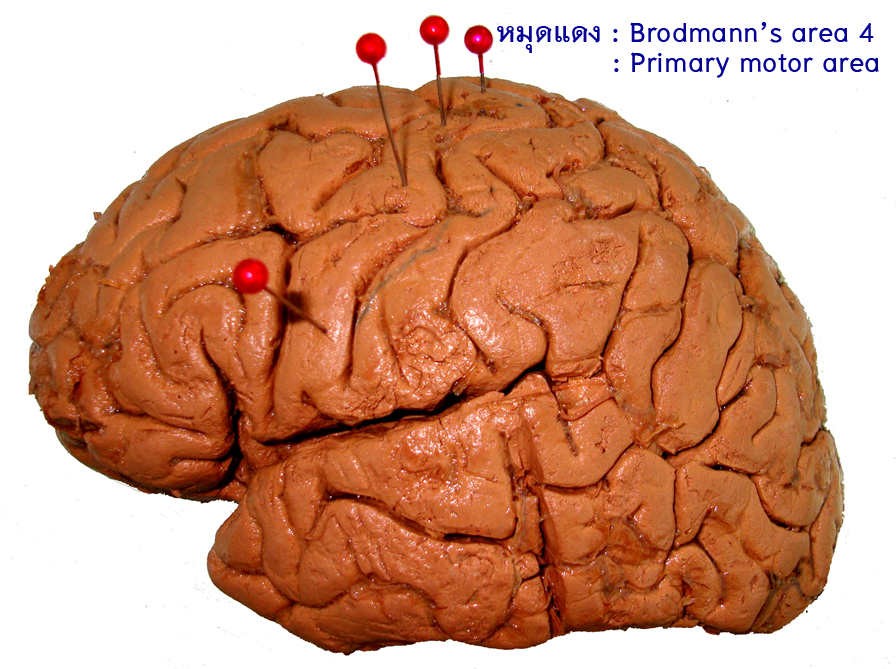
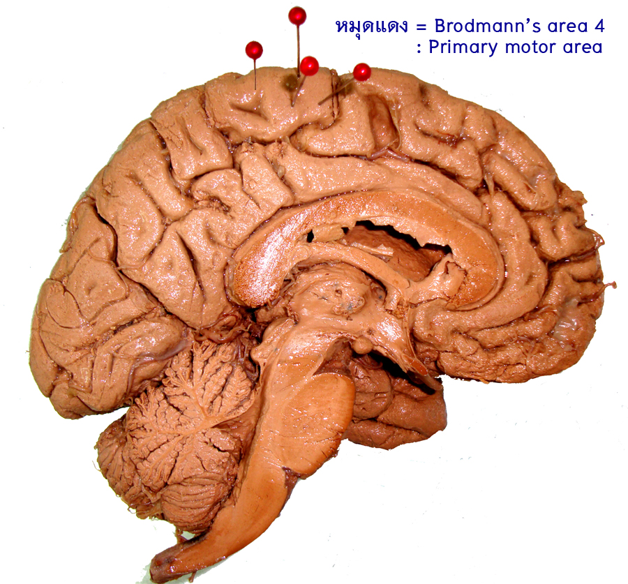
2.1.2 Premotor cortex or Brodmann’s area 6 อยู่ที่ anterior half of precentral gyrus และเลยเข้าไปใน posterior part of superior และ middle frontal gyri ส่วนที่อยู่ทาง lateral surface ของ cerebral hemisphere
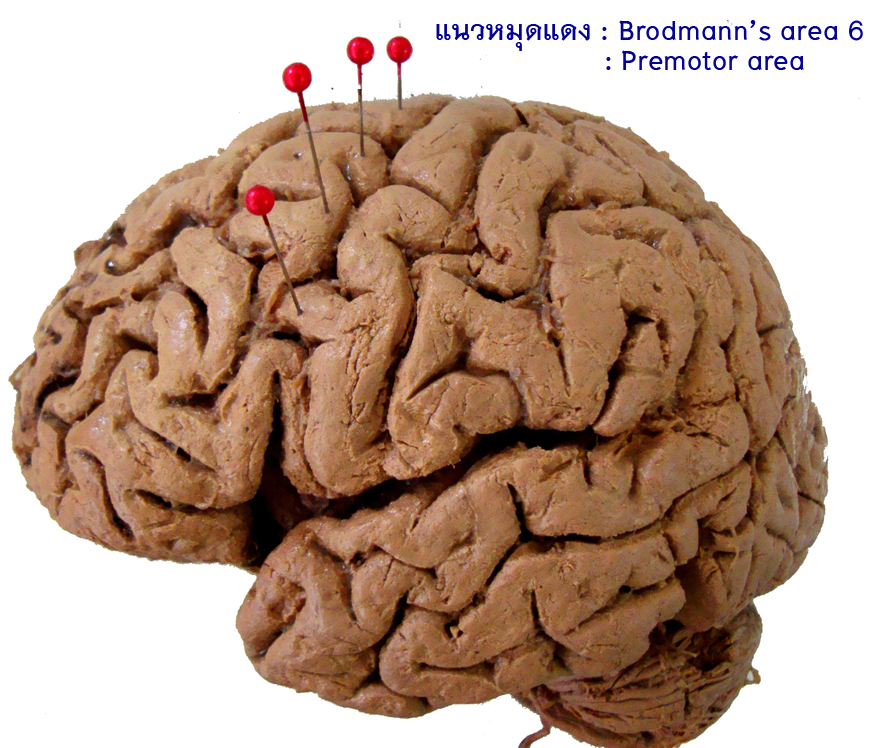
2.1.3 Frontal eye field or Brodmann’s area 8 อยู่ที่ middle frontal gyrus ส่วนที่อยู่หน้าต่อ premotor cortex
2.1.4 Broca’s area or Brodmann’s area 44, 45 อยู่ที่ inferior frontal gyrus เฉพาะ pars triangularis (45) และ pars opercularis (44)
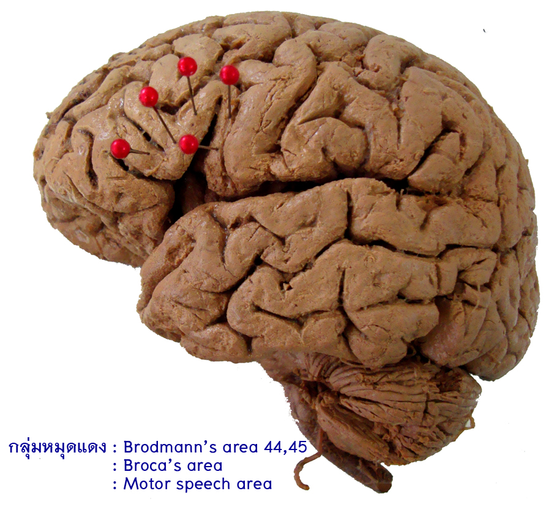
2.1.5 Prefrontal area or Brodmann’s area 9, 10, 11, and 12 เป็นส่วนของ frontal lobe ที่อยู่หน้าต่อ Broca’s area, frontal eye field และ premotor cortex และมีพื้นที่เลยเข้าไปใน orbital gyri ด้วย
2.2 Parietal lobe
2.2.1 Primary somatosensory cortex or Brodmann’s area 3, 1, 2 อยู่ที่ postcentral gyrus และ posterior part of paracentral lobule
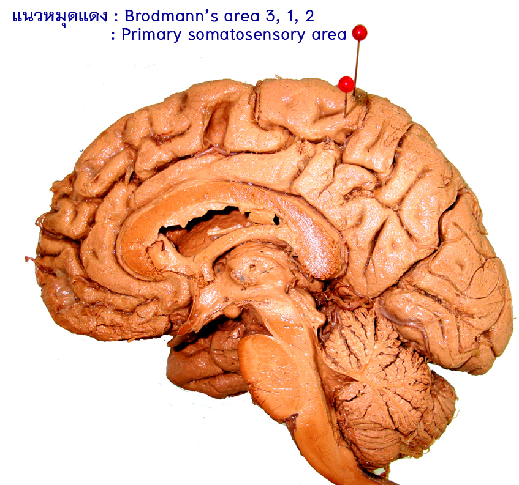
2.2.2 Secondary somatosensory cortex อยู่ที่ superior lip ของ posterior ramus of lateral fissure (inferior end of postcentral gyrus)
2.2.3 Somesthetic association area or Brodmann’s area 5, 7, 39 and 40 อยู่ใน parietal lobe หลังต่อ postcentral sulcus แบ่งเป็น superior parietal lobule ซึ่งมี Brodmann’s area 5, 7 และ inferior parietal lobule ซึ่งมี Brodmann’s area 39, 40
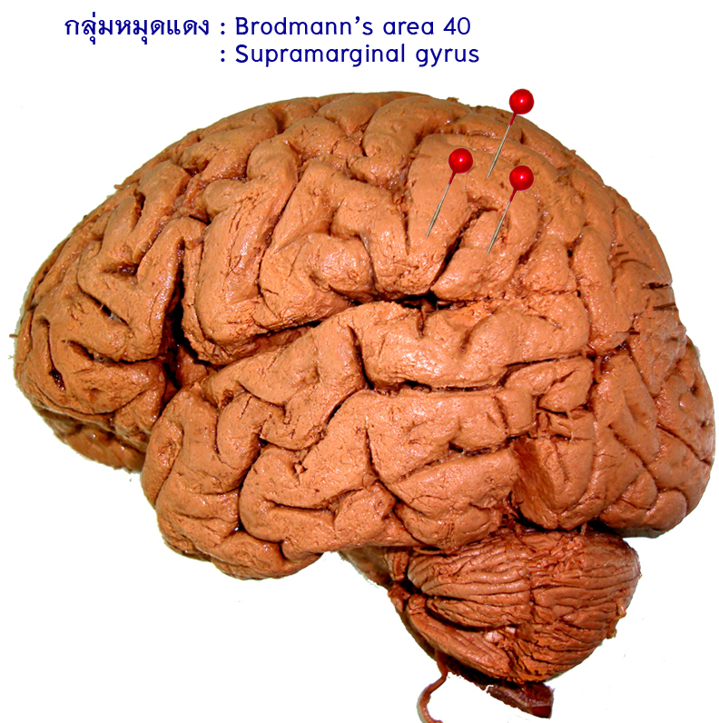
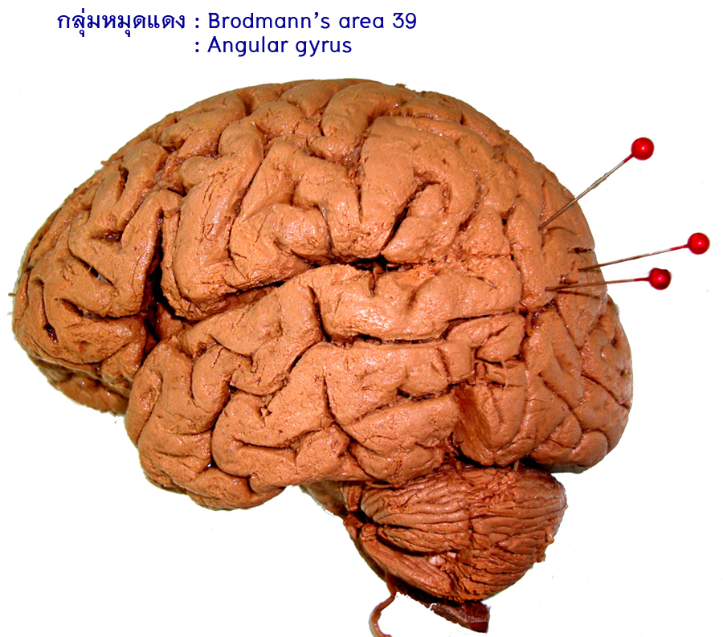
2.2.4 Primary gustatory area r Brodmann’s area43
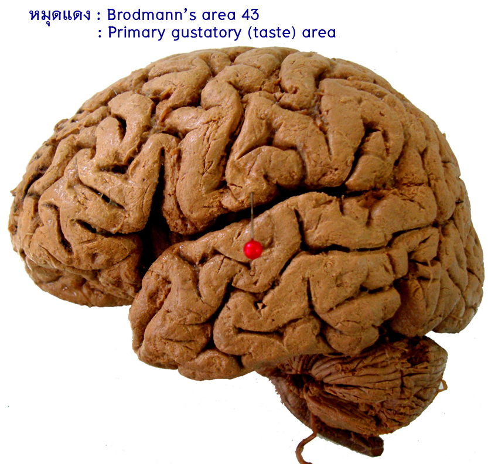
2.3 Occipital lobe
2.3.1 Primary visual cortex or Brodmann’s area 17 อยู่ล้อมรอบ calcarine sulcus และที่ occipital pole
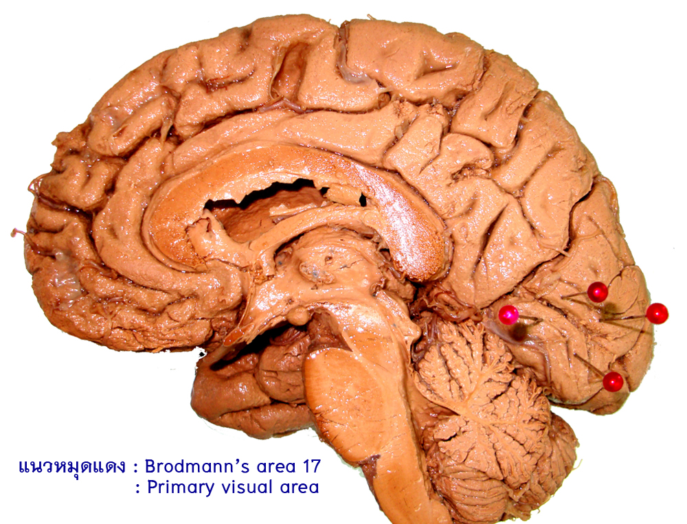
2.3.2 Secondary visual cortex (visual association cortex) or Brodmann’s area 18, 19 อยู่ล้อมรอบ primary visual cortex ถัดออกไปตามลำดับ ซึ่งมีพื้นที่อยู่ในส่วนที่เหลือของ occipital lobe
2.4 Temporal lobe
2.4.1 Primary auditory cortex or Brodmann’s area 41, 42. อยู่ที่ transverse temporal gyri of Heschl
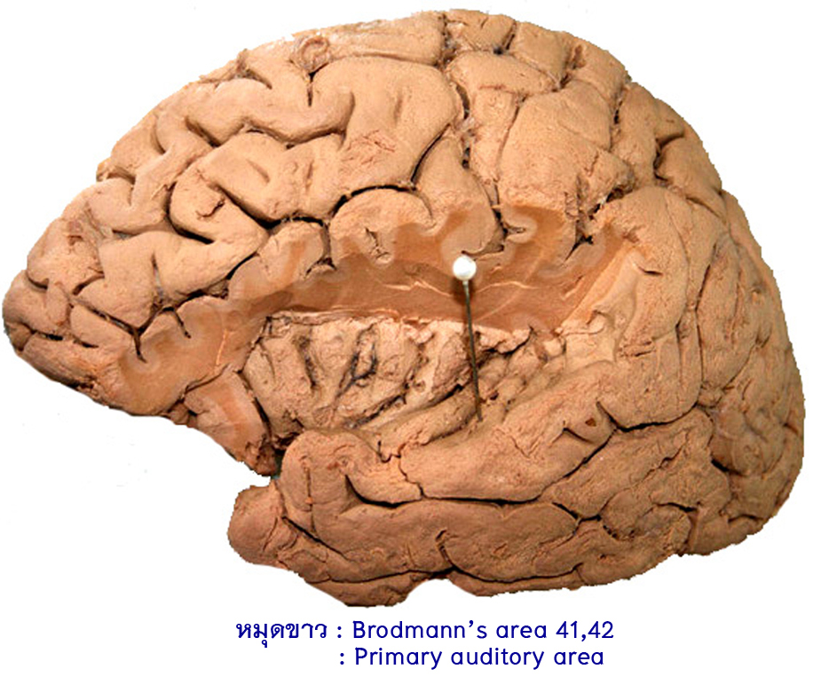
2.4.2 Secondary auditory cortex (auditory association cortex) or Brodmann’s area 22. อยู่ที่ superior temporal gyrus ที่ล้อมรอบ primary auditory cortex
2.4.3 Wernicke’s area or Brodmann’s area 22. Area นี้อยู่ในส่วนหลังของ superior temporal gyrus, ของ dominant hemisphereบริเวณนี้มีบทบาทสำคัญอย่างไร
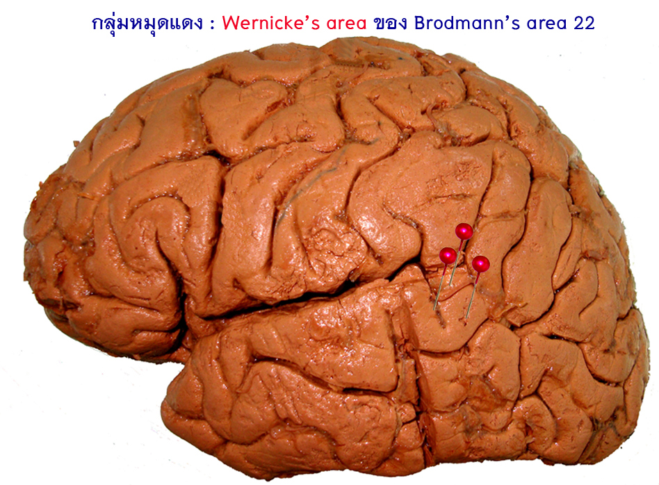